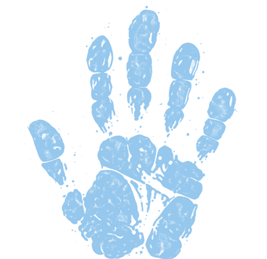

Ancestral Mark Editorial
Libri di enigmistica curati nei dettagli, parole da cercare e piccoli momenti di gioia.
›
I nostri libri
Amazon.it
›
›
Stampa a casa
Pagine PDF su Etsy
›
Seguici
TikTok
Sfide di parole
›
Instagram
Dietro le pagine
›
Facebook
Unisciti alla community
›
YouTube
Video e sfide
›
LinkedIn
Il nostro mondo editoriale
›
X
Novità e aggiornamenti
›
Threads
Conversazioni brevi
›
Lingua
×
Català
Čeština
Dansk
Deutsch
English (UK)
English (US)
Español
Français
Hrvatski
Italiano
Lietuvių
Magyar
Nederlands
Norsk
Polski
Português
Română
Shqip
Slovenčina
Slovenščina
Srpski
Suomi
Svenska
Ελληνικά
العربية